Lab 7 Security Enhancements#
7.0 - What’s in the lab?#
In this lab we will mainly explore a subset of the security features that the platform provides. We will start with Distributed Firewalling where the source and destination are in two different VPCs to Intra-VNET segmentation and finally end with a quick configuration of ThreatIQ.
 Figure 1: Current State of the Topology
Figure 1: Current State of the Topology
7.1 - Distributed Firewalling (Inter-VPC/VNET)#
7.1.1 - Smart Group Creation#
 Figure 2: Navigate to Smart Groups
Figure 2: Navigate to Smart Groups
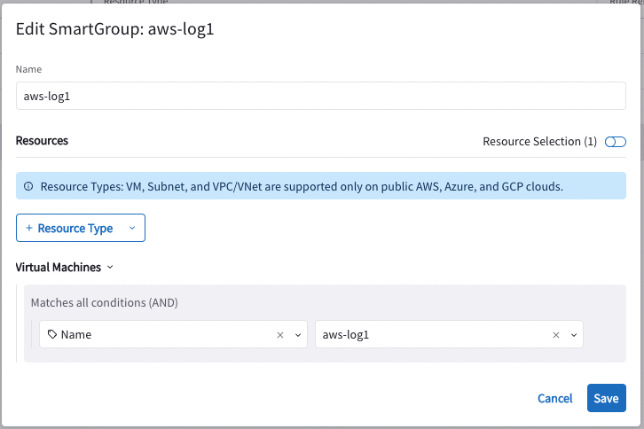Figure 3: Create Smart Group Aws-log1
 Figure 4: Create Smart Group Azure-log1
Figure 4: Create Smart Group Azure-log1
 Figure 5: Create Smart Group Azure-log2
Figure 5: Create Smart Group Azure-log2
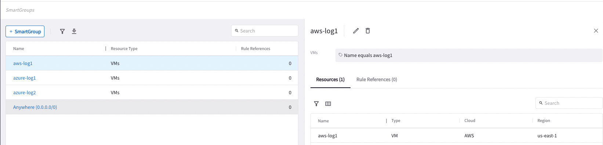Figure 6: AWS-Log1 SmartGroup Resource Matching
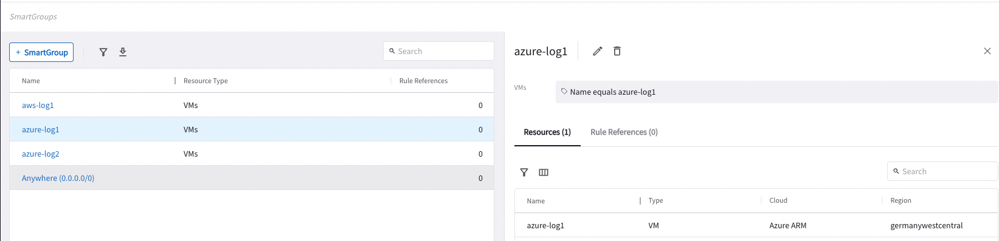Figure 7: Azure-Log1 SmartGroup Resource Matching
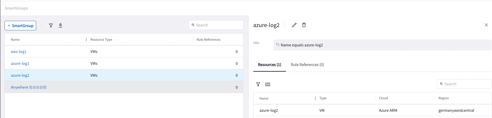Figure 8: Azure-Log2 SmartGroup Resource Matching
7.1.2 - Pre-DFW Connectivity Test#
Before any DFW rules, let us check the connectivity from aws-log1 to azure-log1 & azure-log2 leveraging ping and the proxy.
 Figure 9: Ping from aws-log1 to azure-log1
Figure 9: Ping from aws-log1 to azure-log1
 Figure 10: Proxy from aws-log1 to azure-log1
Figure 10: Proxy from aws-log1 to azure-log1
 Figure 11: Ping from aws-log1 to azure-log2
Figure 11: Ping from aws-log1 to azure-log2
 Figure 12: Proxy from aws-log1 to azure-log2
Figure 12: Proxy from aws-log1 to azure-log2
7.1.3 - Distributed Firewall Rule#
Let’s start by enabling Distributed Firewalling.
 Figure 13: Navigate to Distributed Firewalling
Figure 13: Navigate to Distributed Firewalling
 Figure 14: Enable Distributed Firewalling
Figure 14: Enable Distributed Firewalling
Now that we have enabled Distributed Firewalling, the next step is to put a rule that locks down the communication from aws-log1 to azure-log1 to be only HTTP.
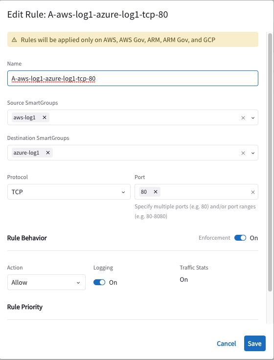Figure 15: Rule aws-log1 to azure-log1 tcp port 80 Part 1
 Figure 16: Rule aws-log1 to azure-log1 tcp port 80 Part 2
Figure 16: Rule aws-log1 to azure-log1 tcp port 80 Part 2
7.1.4 - Zooming in on the DFW Rule#
In the previous section, we just put a rule allowing HTTP traffic only from aws-log1 to azure-log1. Note that because the source and destination are in different VPC/VNETs the rules are applied on the gateways. The intelligence of the solution allows you to write a rule and the system decides where to enforce the rule (Gateway or NSGs in Azure).
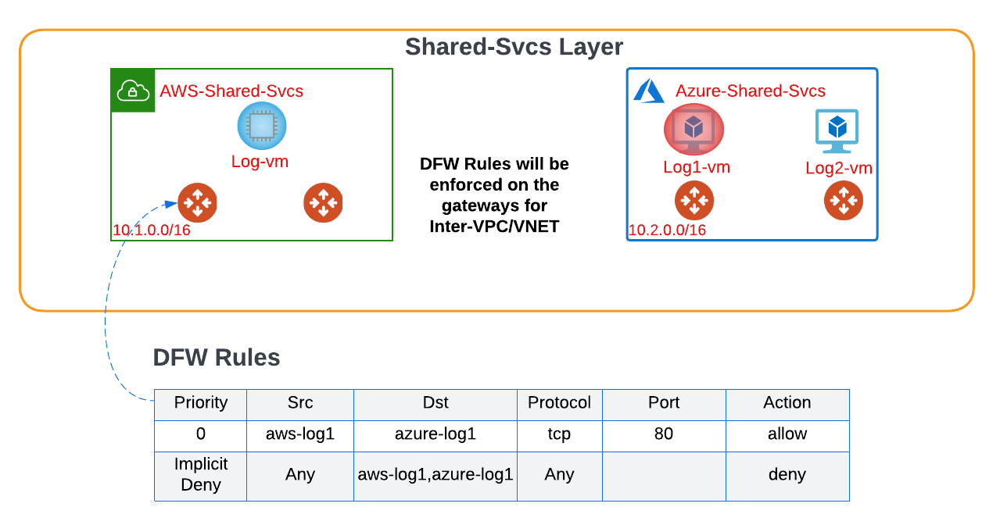Figure 17: DFW Rules Impact Explained
Now that we have explained how Distributed Firewalling works across VPCs/VNETs let us attempt to ping azure-log1 from aws-log1.
ssh student@aws-log1.pod150.aviatrixlab.com
 Figure 18: Ping azure-log1 from aws-log1
Figure 18: Ping azure-log1 from aws-log1
Ping stops working as expected due to an implicit deny policy. Let us try to proxy from aws-log1 to azure-log1. This works as per the allowed policy.
 Figure 18: Proxy azure-log1 from aws-log1
Figure 18: Proxy azure-log1 from aws-log1
Below you can see the logs in Policy Monitor for this connection.
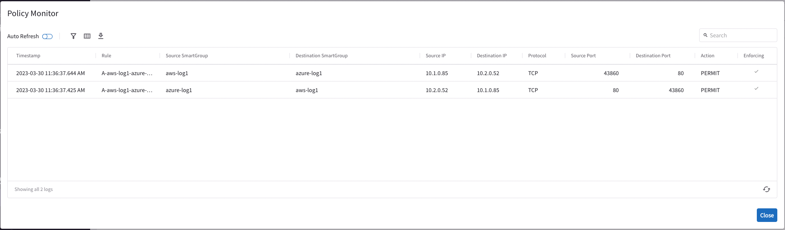Figure 18: Proxy azure-log1 from aws-log1
Now aws-log1 is only allowed to communicate with azure-log1 over HTTP, all other communication with aws-log1 or azure-log1 will be blocked by the virtue of implicit deny.
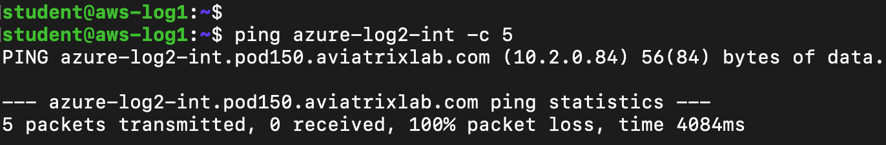Figure 19: Ping azure-log2 from aws-log1
Customer-a-client is no longer able to access aws-log1 or azure-log1 but can still access azure-log2 as it is not part of the policy.
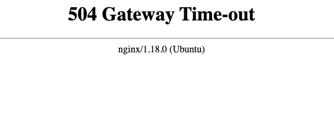Figure 20: Proxy customer-a-client to aws-log1 and azure-log1
 Figure 21: Proxy customer-a-client to azure-log2
Figure 21: Proxy customer-a-client to azure-log2
7.2 - Distributed Firewalling (Intra-VNET)#
This section shows Intra-VNET segmentation between two Virtual Machines in Azure namely azure-log1 and azure-log2.
We start by logging into the Azure Portal (details are in the lab portal).
We will see the Virtual Machine’s Network Security Group (NSG) configuration of both instances prior to enabling Intra-VNET firewalling.
 Figure 22: Azure-log1 Networking pre-Intra VNET
Figure 22: Azure-log1 Networking pre-Intra VNET
Please make sure you filter by subscription where your subscription is equal to your pod id.
 Figure 23: Azure-log1 Networking pre-Intra VNET
Figure 23: Azure-log1 Networking pre-Intra VNET
Figures 24-27 show how you can get the details of the NSGs for azure-log1 & azure-log2 prior to enabling Intra-VNET firewalling.
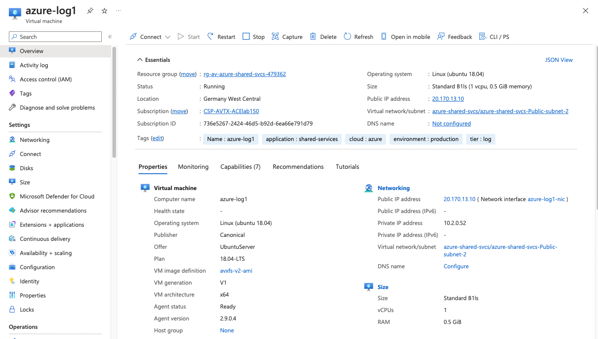Figure 24: Azure-log1 Networking pre-Intra VNET
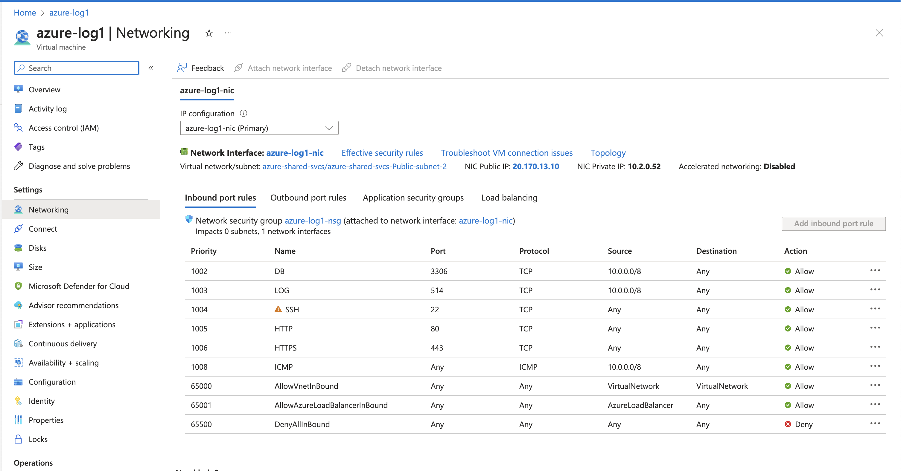Figure 25: Azure-log1 Networking pre-Intra VNET
 Figure 26: Azure-log1 Networking pre-Intra VNET
Figure 26: Azure-log1 Networking pre-Intra VNET
 Figure 27: Azure-log2 Networking pre-Intra VNET
Figure 27: Azure-log2 Networking pre-Intra VNET
Here, we will attempt a connectivity test from azure-log1 to azure-log2 leveraging the proxy.
 Figure 28: azure-log1 to azure-log2 proxy pre-Intra VNET
Figure 28: azure-log1 to azure-log2 proxy pre-Intra VNET
Now we will enable Intra-VNET on the azure shared services VNET containing azure-log1 and azure-log2.
 Figure 29: Enable Intra-VNET Part 1
Figure 29: Enable Intra-VNET Part 1
 Figure 30: Enable Intra-VNET Part 2
Figure 30: Enable Intra-VNET Part 2
 Figure 31: Enable Intra-VNET Part 3
Figure 31: Enable Intra-VNET Part 3
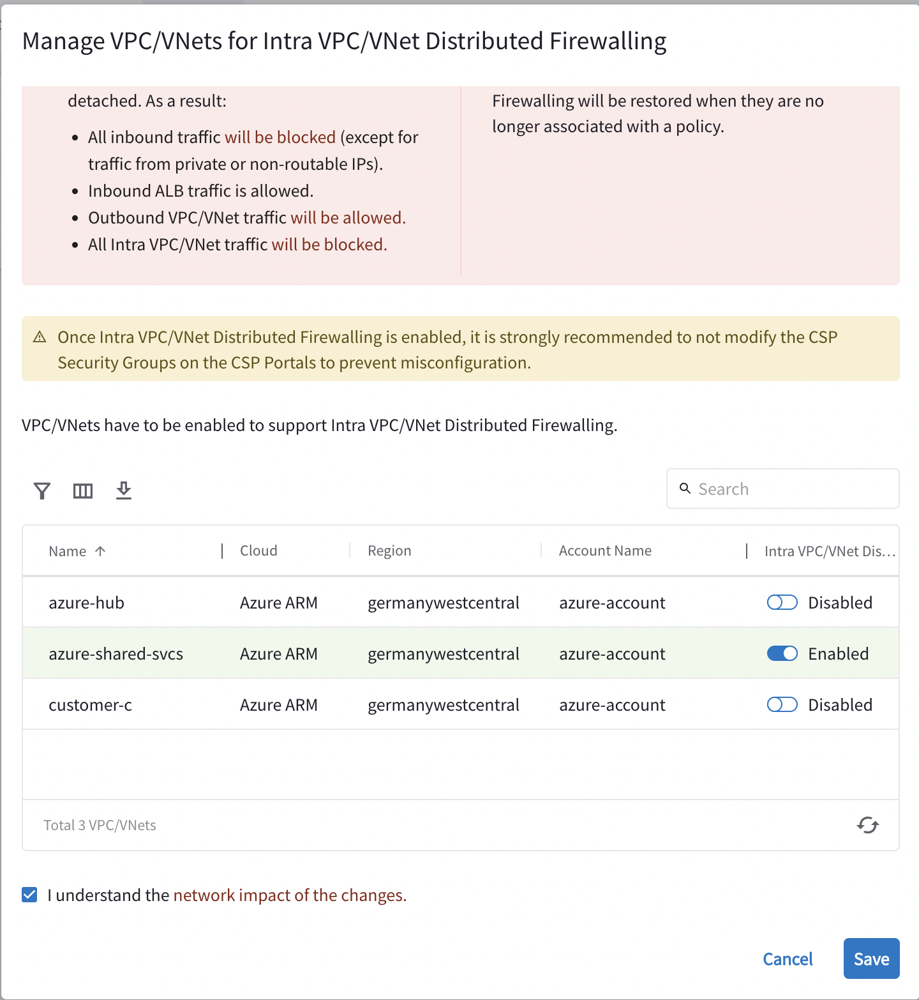Figure 31: Enable Intra-VNET Part 4
Now let us look at the impact of enabling Intra-VNET on the NSGs/ASGs of azure-log1 and azure-log2.
The reason that Azure-log1 has a change in its NSG and is put into an ASG is that it is referenced by policy whereas Azure-log2 remains unaltered.
 Figure 32: Azure_log1 post intra-VNET ASG
Figure 32: Azure_log1 post intra-VNET ASG
 Figure 33: Azure-log1 post intra-VNET NSG
Figure 33: Azure-log1 post intra-VNET NSG
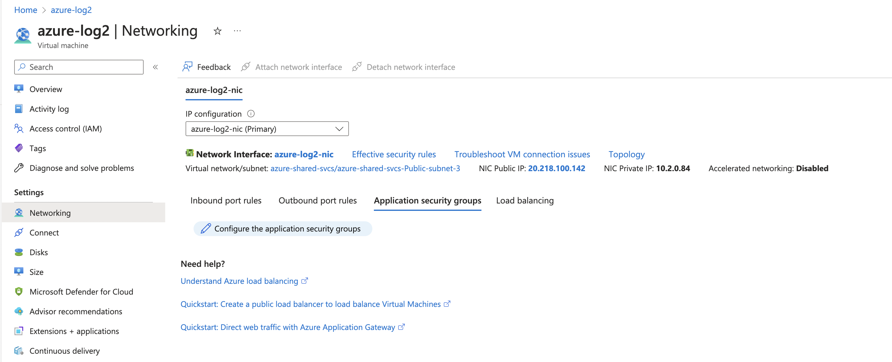Figure 34: Azure-log1 post intra-VNET NSG
 Figure 35: Azure-log2 post intra-VNET ASG
Figure 35: Azure-log2 post intra-VNET ASG
Now try accessing azure-log1, you will realize it is no longer reachable. This is due to the last rule in the NSG DenyAllInbound which will block our access as we are trying to access via our own Public addresses.
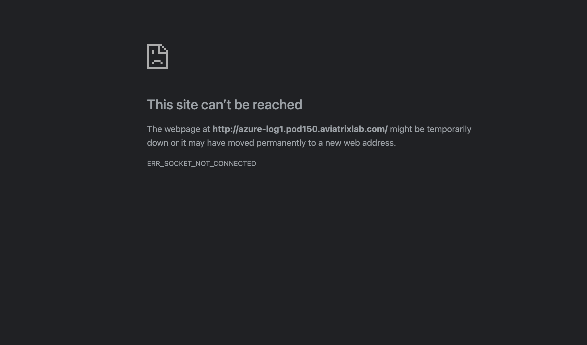Figure 36: Azure-log1 no longer reachable
To solve this problem, let us create a SmartGroup referencing our public address.
 Figure 38: Home IP SmartGroup
Figure 38: Home IP SmartGroup
We will now create a rule that allows from traffic from our public address to azure-log1.
 Figure 39: Allow HTTP from Home IP to Azure-log1
Figure 39: Allow HTTP from Home IP to Azure-log1
 Figure 39: Allow HTTP from Home IP to Azure-log1 Part 2
Figure 39: Allow HTTP from Home IP to Azure-log1 Part 2
Now, we can see the NSG for azure-log1 got updated with a rule allowing traffic from our public address. Please note that the public address you will have in your setup will be different than the screenshot.
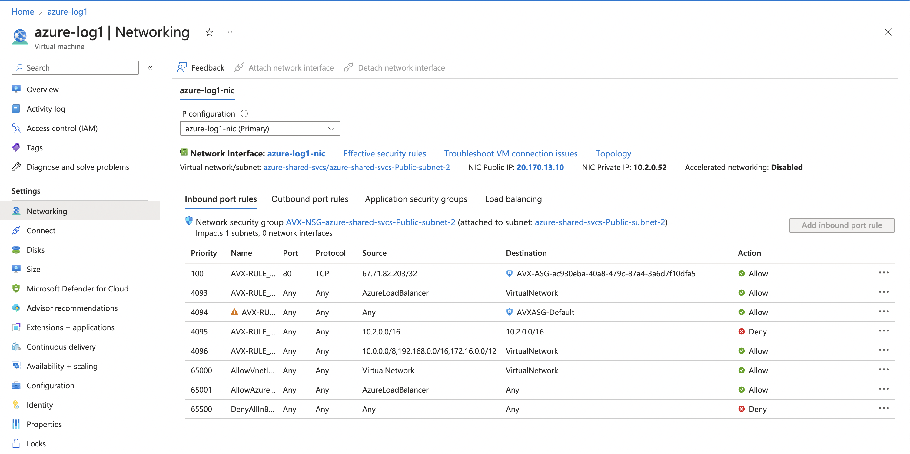Figure 40: Azure-log1 NSG Updates
Now you should be able to recover access to azure-log1 and you can attempt to proxy from azure-log1 to azure-log2. This should work as azure-log2 has no inbound policy preventing the access, however attempting to proxy from azure-log2 to azure-log1 will not succeed due to rule 4095 which blocks traffic from 10.2.0.0/16 to 10.2.0.0/16.
 Figure 42: Allow HTTP from Home IP
Figure 42: Allow HTTP from Home IP
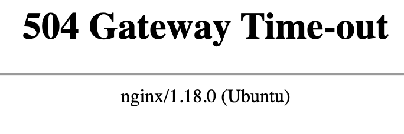Figure 42: Allow HTTP from Home IP
Now our objective is to close down the communication from azure-log1 to azure-log2. Let’s check if ping is allowed. Let’s SSH to azure-log1 and try to ping azure-log2.
ssh student@azure-log1.pod150.aviatrixlab.com
SSH is not working due to the fact that we only allowed HTTP from our public address.
 Figure 42: Allow SSH from Home IP Part 1
Figure 42: Allow SSH from Home IP Part 1
 Figure 42: Allow SSH from Home IP Part 2
Figure 42: Allow SSH from Home IP Part 2
 Figure 43: Allow HTTP from Home IP Part 2
Figure 43: Allow HTTP from Home IP Part 2
To close this down, we will be putting a rule from azure-log1 to azure-log2 that only allows HTTP traffic.
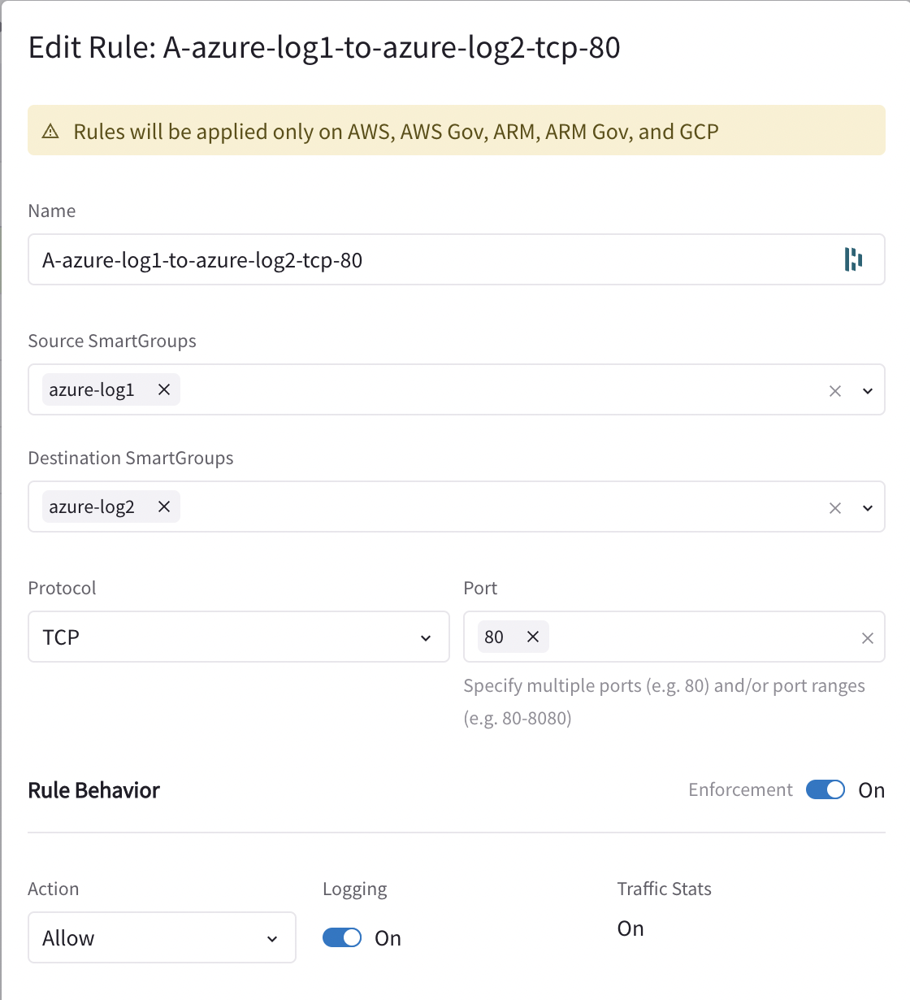Figure 43: Allow HTTP from Home IP Part 2
 Figure 42: Allow HTTP from Home IP
Figure 42: Allow HTTP from Home IP
 Figure 42: Allow HTTP from Home IP
Figure 42: Allow HTTP from Home IP